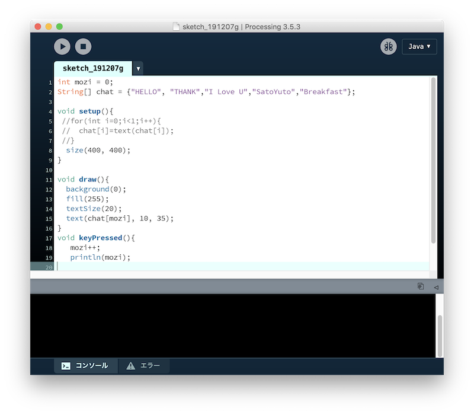
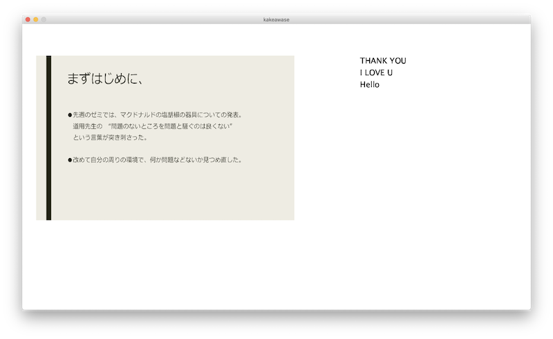

Processing（プロセシング）：電子アートとビジュアルデザインのためのプログラミング言語であり、統合開発環境である。
アーティストによるコンテンツ制作作業のために、詳細な設定を行う関数を排除している。 視覚的なフィードバックが即座に得られるため、
初心者がプログラミングを学習するのに適しており、電子スケッチブックの基盤としても利用できる。Javaを単純化し、グラフィック機能に特化した言語といえる。（Wikipedia)
常に左上のRunボタン→プログラミングが実行→Stopボタン→プログラミングが停止
size(1280, 720);
ウインドウサイズをピクセル毎にサイズを選択することができる。
この例はHDサイズである1280×720のサイズにする。
background(255);
ウインドウのバックの色を変えることができる。
この関数を使わない場合だとグレーになる。255はホワイトである。
rect(60, 80, 240, 180);
「左上の点が(60,80)で幅240ピクセルで高さ180ピクセルの図形」という意味
void setupとは、スケッチが実行された時に最初に一回行われる動作
void drawとは、setupの次に連続して行われる処理
道用先生からインターフェイス作成に向けての道筋を立てていただき、最初はインターフェイスにおける先生表示画面での画像(jpeg)を切り替えを最初に作成をします。
Processing上で画像を表示させるにはまず、pngかjpegまたはGIFの画像を用意しデスクトップに置く。
その後に使用するスケッチ上に画像をドラッグする。するとスケッチ→スケッチフォルダーを開く→dataに先ほどの画像データが入っていたら完璧。
（あくまでProcessingはグラフィックを扱ったりする環境だから対応するファイルも多い。のかも）
画像を扱うためのクラスで画像の読み込みにはloadImage()関数を使う。
// PImage型の変数photoにファイル名を読み込む
PImage photo = loadImage("画像のファイル名");
// 画像を表示
image(photo, 0, 0);
// インターネットから拝借してくる
PImage photo = loadImage("うぇぶのURL");
しかし、、
画像を表示する方法は理解できたが、表示した画像を切り替えて違う画像にするという方法ができない。というよりはProcdssingでそのような使い方を想定していないためにそのような関数あるいは機能が備わっていない。この打開策としては、Processingにある様々な機能を掛け合わせて、画像を切り替える動きを作るのがプログラミングだと思うが、それを行う知識がないためできませんでした。
（例）キーボードのtabかaで切り替えをする。はずだったが切り替わらず。そもそもあっているのか
そこでやむを得ないと考え、参考書ではなくインターネットで検索をかけてみたところ、いくつか方法がありました。
そのままコピペではなく、その内容からどうしてこう動作するのかをくみ取って自分の勉強のためにしたいと思います。（この方法は自分でも気がひけるので今後はしないようにします）
変数：プログラミングで使うデータの入れ物のこと。
変数を使うには変数の名前とそのデータ型を組にして「宣言」する必要がある。変数にはデータ型というのに分かれ、入れられるデータに制限がある。
（intは整数値, floatは小数値, Stringは文字列, booleanは真偽値, colorは色, charは一文字の文字データ）
// int型の変数 value1 を宣言
int value1;
// int型の変数 value2 を宣言し、71という値を代入
int value2 = 72;
つまり、データ型 変数名；か データ型 変数名 = 初期値；で表される。
配列：似たような複数の変数をプログラミングで制御したい場合は「配列」を利用する。
例えば、「こんにちは。朝ごはんは 食べましたか？」
という会話中の単語を用いて何かプログラムを書こうとする時に配列を用いない場合は、
String s0 = "こんにちは。";
String s1 = "朝ごはんは";
String s2 = "食べましたか？";
と一つずつ変数に代入する必要があるが、配列を利用すると、
String[] chat = {"こんにちは。", "朝ごはんは", "食べましたか"};
というようにまとめて代入することができる。配列には「インデックス」と呼ばれる０から始まる番地があり、順に値が代入される。
配列を使うことによって、"こんにちは"を使いたいときには、
String[] chat = {"こんにちは。", "朝ごはんは", "食べましたか"};
text(chat[0], 0, 50);
このようにすれば、画面中央に「こんにちは」と表示される。chat[0]は「配列chat0番目の値（こんにちは）」ということになる。
・ここまではわかるがだんだん難しくなって来た印象。。でもゆっくりながらちゃんと理解できているので楽しいです(はじめて！)
変数を準備する場合は全体の名前を「x」にする場合、 int x;で済むのだが、配列の場合は、
int[] x;
と[]をつけて宣言をしてあげる。これは「xという名前は整数の配列だよ」と名前を宣言しただけだから、これでは配列としては使えない。そこで、配列を実際に作るのがnewという命令。これで箱を何個並べるかを指定することができる。
x = new int[20];
これによって各番号を使う際には何番目にの配列を使うか指定する。これを「配列の要素」という。
int[] x = new int[] に略せそう。
インデックスは０から始まる整数の連番なのでfor文が使いやすい。例えば、配列の全ての値を表示したい場合はこのようにかける。
String[] chat = {"こんにちは。", "朝ごはんは", "食べましたか"};
for (int i = 0; i < chat.lenght; i++){
text(chat[i], random(width), random(height)); }
「 for (int i = 0; i < chat.lenght; i++){ 」で、for命令に繰り返しの条件を指定し、繰り返しの命令を開始する。
引数で指定された「 for (int i = 0; i < chat.lenght; i++){ 」はセミコロンで区切られた三つの文でできていて、
「ループ初期化」「ループ継続条件」「ループ更新」を指定している。
「ループ初期化」は、繰り返しの最初に一度だけ実行される文で、「継続条件」は、評価の結果が真ならば文が実行される。「更新」では各回の処理の最後に実行される文の意味を表す。
・最初にこれを見たときには全く理解できなかったが、一個ずつ汲み取っていくことでひとつひとつの意味が理解できるようになった。今では見たものを理解するのに精一杯だがそれがパズル要素となって楽しいという気持ちになっている。これからは一から自分で書いて完成させた後の達成感を味わってみたい。
インターフェイス完成に向けて、カタチを作っていきます。
パワーポイントをpngに変換させてその変換したファイルのままProcesing上に表示するしてクリックでスライドが切り変わる仕組みと、ある決まった言葉をクリックと同時に表示する仕組みを作る。
Processingではパワーポイント(pptx)を表示することができない(自分がわからないだけかも)ので、pngファイルに変換します。
パワーポイントでファイル→プリント→プレビューで表示→書き出すでpngファイルに書き出すことができる。
・できなかった事
パワポのスライドが複数枚あるときにpngファイルに変換してそのままProcessingに入れると表示することができない。
そのため、一枚一枚pngファイルに変換し直してProcessingに入れる作業をしました。他の方法がわかったら書きます。
mouseReleased() はマウスのボタンが離された時にいつも反応する。
pngファイルなどの画像の入れ方は上記(PImageクラス)と同じように行なった。

pngファイルのスライドを表示している隣で決まった文字を表示する。
複数の言葉"HALLO", "THANK"を配列に入れ、クリックと同時にkeyPressedを用いて表示する仕組みを作る。と考えた。
が、実行してみるとスライドしか表示されない。
原因を考えると、
①すでに配列があるから混合してしまっている。
②そもそも書き方が間違っている。
上記が実行できなかった原因
①printlnで変数moziをキーが押されたら表示するという単純な文で大丈夫だった。
②ハローのスペルが間違っていた。
→追記(12/20) 上のプログラムが動かなかったのは、keyPressedのkが大文字になっていたからと判明。(道用先生ご指摘ありがとうございます。)

上記で行なったマウスクリックでjpegのスライド移動をさせる機能とキーボードクリックで文字の表示をさせる機能を同時に行います。
二つのスケッチを一つにまとめてみます。この時に注意したのは、
①スライドと文字の表示する座標(位置)が被ってしまうといけないので、スライド(0,0)の位置でサイズは(720,576)で、文字は(850,100)の位置にしました。
②あと必ず新しいスケッチにもスケッチフォルダーに画像を入れておきます。(
The file [ファイル名] is missing or inaccessible, make sure the URL is valid or that the file has been added to your sketch and is readable. というエラーが出てくる。)
すると、ArrayIndexOutOfBoundsException: 5というエラーが出てくる。
考察
①「text(chat[mozi], 900, 100);」が原因か？
② jpegのスライドではifによる繰り返しが行われているが、テキストの場合は繰り返しが行われておらず、そこで失敗している可能性
(テキストエリアにて1,2,3,4,5以降にこのメッセージが表示されているため)
→ArrayIndexOutOfBoundsExceptionというエラーはjavaなどでよく出るエラーで、配列のインデックスとして存在しない要素を指定した場合に発生するエラー。
1から10のインデックスしかないところ、20のインデックスに値を設定しようとする場合などに発生する。
考察②を潰すために、クリックと同時にいくつものコメントを表示させるのはなく一言だけ表示できるか試してみる。
テキストを表示させるには text()関数 を用いる。キーを押すと命令が実行されるkeyPressedを使用する。

実行すると、本来やりたかったマウスクリックでスライドの移動とキークリックで文字の表示ができた。
つまり、考察②のテキストの繰り返し関係が上手に機能していないことが明らかになった。
道用先生がこの考察②を解決していただいたので、自分の言葉で読み取っていきます。
pdeファイルをdownload ←ここからソースコードをpdeファイルでdownloadできます。
int mozi = =1
void draw()
if (mozi>-1)
→変数moziを宣言し、その中に-1を代入する。これによりif文を使えるようにする。
int strY = 70
→前回までの一言コメントを出すだけのtextでは一つずつにY座標を指定していたので、変数として位置づけることによって、連続して文字が表示された時に順に下に表示されるようになった。
これまで文字の表示の仕方は、配列の中に言葉を一つずつ入れていき順番に表示する仕組みだったが、今後のサーバー上で文字を拾ってきて表示することを考えて、split()を使えるようにする。
split()：文字列を指定された正規表現に一致する位置で分割する。
String str = "りんご,レモン,すいか,ぶどう";
String[] fruit = str.split(",", 0);
これを実行すると、
fruit[0] = "りんご";
fruit[1] = "レモン"; ...以下略
このように、対象となる文字列を指定した区切り文字によって分割してそれぞれを配列の要素として格納する。
今までは、String[] chat = {"HELLO", "THANK","I Love U","SatoYuto"}; と、文字をダブルクォーテーションでくくっていたが、セミコロンで文字をつないでスケッチしてみる。
String str = "THANK, YOU, Hello, Good, I LOVE U";
String[] chat = str.split(",", 0);
これにより一文でつないだ文がダブルクォーテーションでくくってあるものを一つの配列の要素として取り出してくれている。
pdeファイルをdownload
loadStrings()：ファイルの内容かurlを読み込み、各々の行の文字の配列をつくる。
サーバーのやりとりによるリアルタイムのチャットシステム実現のために、まずはインターネットから文字を拾ってくるだけの方法を挑戦してみる。